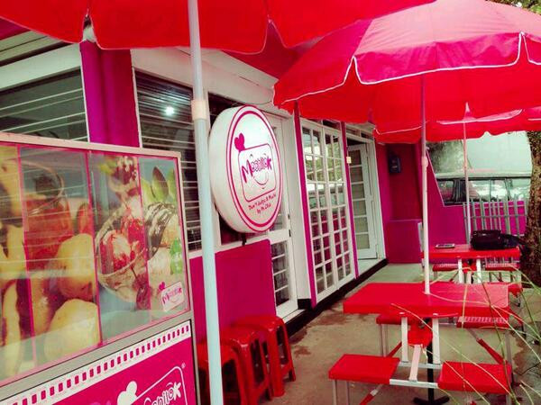

Mochilok
Anda mencari menu kuliner khas bandung yang unik dan lezat ? Apabila iya,apakah anda tahu makanan yang namanya mochi ? Ya benar sekali,kue dengan tekstur kenyal berbentuk bola yang ditaburi tepung putih sehingga warnanya terlihat putih.Kemudian apakah anda juga tahu cilok ? pastinya sama anda juga sudah tidak asing lagi dengan jajanan kuliner atau cemilan aci dicolok yang berbahan dasar aci yang direbus kemudian untuk menikmatinya dengan dicolok ( ditusuk dengan potongan bambu atau lidi ).Nah,akan seperti apa coba apabila 2 makanan khas bandung yang sangat populer tersebut kemudian dikemas dan dimodifikasi menjadi hidangan rasa baru yang bernama Mochilok Bandung ?
Lokasi
Jl. Sekeloa No.31, Dipatiukur, Bandung